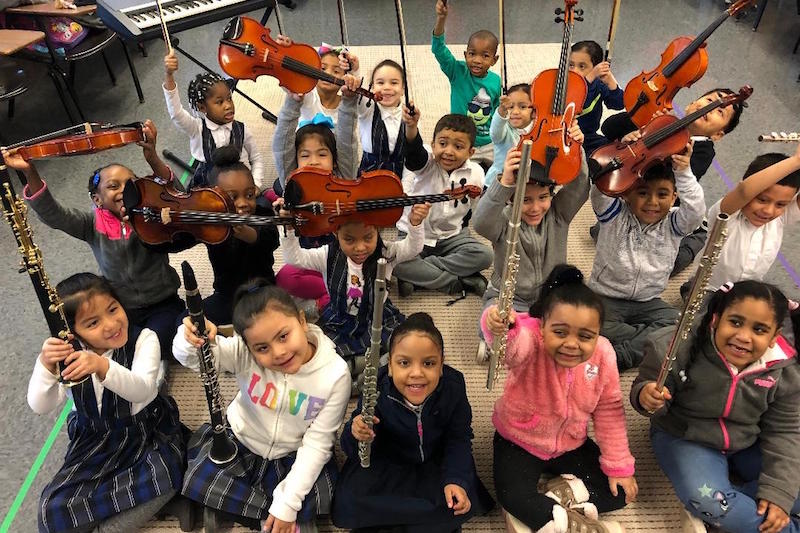
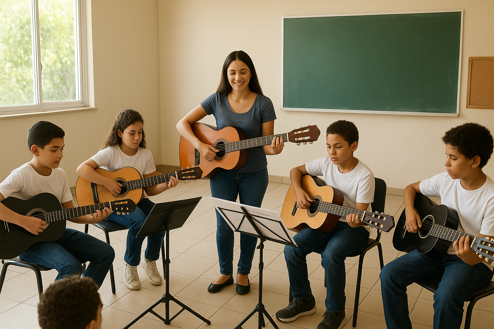

Ong Musica Viva
Quem somos
A Música Viva é uma organização não governamental (ONG), sem fins lucrativos, criada com o propósito de transformar vidas por meio da música. Nosso principal objetivo é promover a inclusão social, a educação cultural e o desenvolvimento humano de crianças e adolescentes em situação de vulnerabilidade social, oferecendo acesso gratuito a aulas de música, instrumentos e experiências artísticas que ampliam horizontes e despertam talentos.
Acreditamos que a música vai muito além da arte: ela educa, une, disciplina e inspira. Cada melodia aprendida representa um passo em direção a um futuro com mais dignidade, oportunidades e cidadania. A Música Viva busca formar não apenas músicos, mas cidadãos conscientes, criativos e sensíveis às realidades do mundo ao seu redor. Por meio da arte, trabalhamos valores como respeito, solidariedade, responsabilidade e cooperação. Com o apoio de professores voluntários, parceiros e doadores, seguimos firmes em nosso propósito de construir uma sociedade mais justa, inclusiva e harmônica, onde toda criança tenha o direito de sonhar — e de transformar seus sonhos em música.
Missão, Visão e Valores
Missão
A missão da Música Viva é promover o desenvolvimento humano, social e cultural de crianças e adolescentes em situação de vulnerabilidade, utilizando a educação musical gratuita como meio de inclusão, aprendizado e construção de cidadania. Por meio da música, buscamos despertar talentos, fortalecer vínculos comunitários e oferecer novas perspectivas de vida para jovens que, muitas vezes, não têm acesso a oportunidades educacionais ou culturais de qualidade. Acreditamos que a arte é uma poderosa ferramenta de transformação, capaz de formar indivíduos mais sensíveis, críticos e conscientes de seu papel na sociedade. Assim, nossa missão vai além do ensino musical: ela se estende à formação de cidadãos solidários, criativos e comprometidos com o bem comum.
Acreditamos que a arte é uma poderosa ferramenta de transformação, capaz de formar indivíduos mais sensíveis, críticos e conscientes de seu papel na sociedade. Assim, nossa missão vai além do ensino musical: ela se estende à formação de cidadãos solidários, criativos e comprometidos com o bem comum. Em cada acorde ensinado e em cada melodia compartilhada, reafirmamos nosso compromisso com a educação, a esperança e o desenvolvimento integral das pessoas, preparando-as para um futuro com mais dignidade, autonomia e propósito.
Visão
A Música Viva tem como visão tornar-se referência nacional e futuramente internacional em iniciativas socioculturais que utilizam a música como instrumento de inclusão, educação e transformação de realidades sociais Buscamos ser reconhecidos como uma instituição inspiradora, capaz de influenciar políticas públicas e práticas pedagógicas voltadas à educação musical acessível, inclusiva e transformadora.
Nosso objetivo é expandir nossa atuação, alcançando novas comunidades, escolas públicas e espaços culturais, construindo uma rede sólida de voluntários, educadores e parceiros comprometidos com o poder da arte como agente de mudança. Sonhamos com um Brasil onde toda criança tenha a oportunidade de aprender, tocar, cantar e se expressar livremente, independentemente de sua condição social.
Valores
- Educação e Cultura: acesso universal e gratuito como direito fundamental.
- Respeito à Diversidade: acolhimento e valorização de todas as identidades e culturas.
- Solidariedade e Cooperação: o crescimento coletivo acima do individual.
- Responsabilidade Social: compromisso com a transformação positiva da comunidade.
- Disciplina e Criatividade: equilíbrio entre técnica e expressão artística.
Fale conosco
Endereço: Esperança, 1323 — Bairro da Graça - Cidade: Sabará, MG
Telefone: (31) 3131-3131
E-mail: ongmusicaviva@ongmisicaviva.org.br